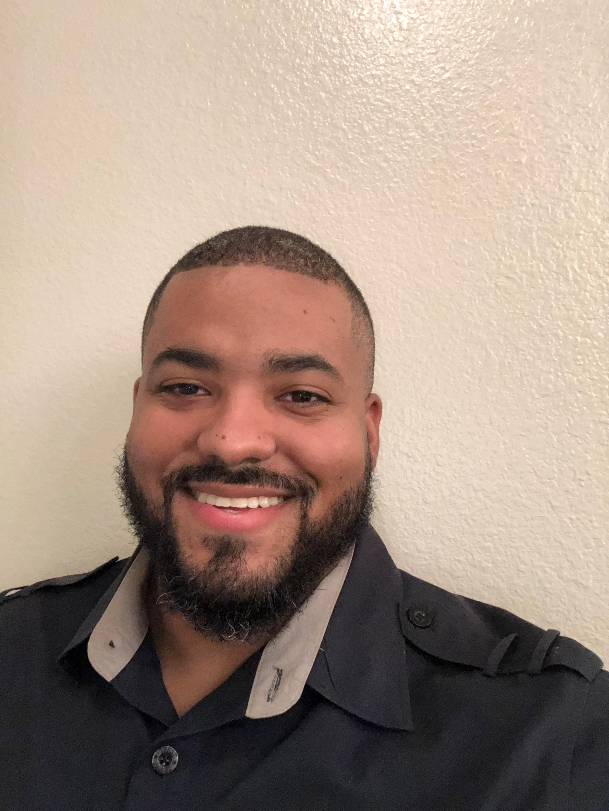

A little about me
I was born in Brooklyn, New York then moved to Chicago, IL at the age of nine. Upon moving to Chicago, I attended Vanderpoel Magnet School for elementary school and for high school I graduated from Gwendolyn Brooks College Preperatory Academy.
Before graduating high school I joined the U.S. Navy. For my naval service I signed up for the rate of Machninist Mate. That rate is the equivalent civilian job of an industrial mechanic. That rate consisted of maintaning hydraulic, pneumatic, and various mechanical systems.